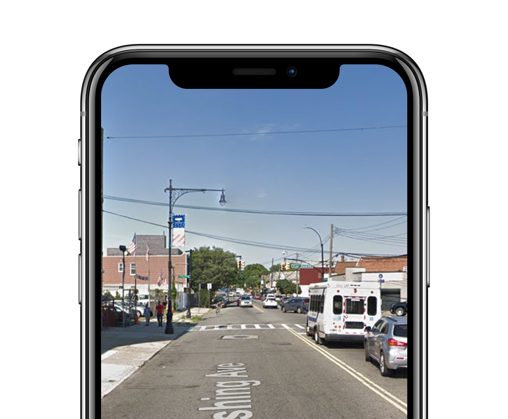

Pungsujiri animals
of New York

This Pungsujiri Map of New York ritual is designed to guide you all over the city.
It will activate specific luck areas in your life, bringing you peace and prosperity
not only to oneself, but also to one’s descendants.
Instruction
1. Take a deep breath, listen to your heart. See what lacks/need improvement in your life.
2. Select pungsujiri animal on map.

3. Send the map to your phone and start your ritual by physically (or virtually!) walking along the route.
Enjoy and good luck on your quest!